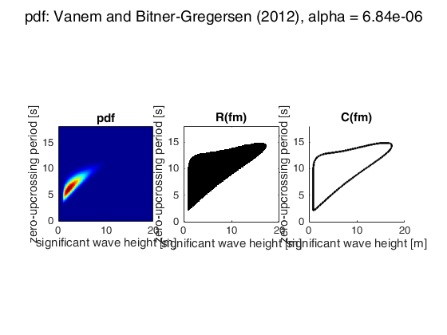

computeHdc
Computes a highest density contour for a given exceedance probability. Currently works for probability density functions with up to 4 dimensions.
Contents
Function input parameters
ModelArray: probability density model, see getEnvironmentalPdfModel() to see which fields the struct has, default = an example pdf is shown
alpha: exceedance probability, default = 6.8e-6 (corresponds to a return period of 50 years with 3 hours sea states)
gridCenterPoints: center points of the grid cells (the numeric integration scheme works on an orthogonal grid); formatted as cell, thus gridCenterPoints{1} contains the vector for the first variable / dimension; default = the ModelArray .gridCenterPoints field is used
shouldPlot: if 1 the contour is plotted, default = 0
Function output parameters
fm: minimum probability density of the enclosed region / probability density along the contour
x1Hdc: x1 coordinates of the points along the contour, since there can be multiple enclosed contiguous regions the output is a cell array with each element representing one connected boundary
x2Hdc: x2 coordinates of the points along the contour
x3Hdc: x3 coordinates of the points along the contour
x4Hdc: x4 coordinates of the points along the contour
Theoretical background
Highest density contours (HDC) enclose highest density regions (HDR) and have been proposed in the publication "Deriving environmental contours from highest density regions" by Haselsteiner, Ohlendorf, Wosnoik, Thoben (http://doi.org/10.1016/j.coastaleng.2017.03.002). This Matlab implementation has been developed with the publication.
License
Author: Andreas F. Haselsteiner (a.haselsteiner@uni-bremen.de)
Version: 1.0.1.0 (April 24th, 2017)
First version: December 14th, 2016
Suggestions / improvements are most welcome! Contact me.
function [fm, x1Hdc, x2Hdc, x3Hdc, x4Hdc] = computeHdc(ModelArray, alpha, ... gridCenterPoints, shouldPlot) % --- check required software (Matlab + toolboxes / Octave + packages ) --- isOctave = exist('OCTAVE_VERSION', 'builtin') ~= 0; % thanks to: http://stackoverflow.com/questions/2246579/how-do-i-detect-if-im-running-matlab-or-octave if isOctave % load the required packages pkg load image pkg load statistics else hasAllToolboxes = license('test', 'image_toolbox') && ... license('test', 'statistics_toolbox'); if ~hasAllToolboxes msg = ['Error. computeHdc requires the image and statistics ' ... 'toolbox. Exiting.']; error(msg) end end % --- validate input parameters --- if ~exist('ModelArray', 'var') disp('Warning: No ModelArray has been entered. Showing example.'); ModelArray = getEnvironmentalPdfModel(1); shouldPlot = 1; end if ~exist('alpha', 'var') alpha = 1/(50*365.25*24/3); % 50 years with 3 hour sea states end if ~exist('gridCenterPoints', 'var') gridCenterPoints = ModelArray.gridCenterPoints; end if ~exist('shouldPlot', 'var') shouldPlot = 0; end % --- calculate needed input variables --- p = length(gridCenterPoints); % number of dimensions dx = zeros(p, 1); cellSize = 1; for i = 1:p dx(i) = gridCenterPoints{i}(2) - gridCenterPoints{i}(1); cellSize = cellSize * dx(i); end % --- compute hdc --- fbarjoint = jointCellAveragedPdf(ModelArray, gridCenterPoints); Fbarzero = @(fm)probabilityOfHdr(fbarjoint, fm, cellSize) - 1 + alpha; fm = fzero(Fbarzero, 0); hdrBinary = fbarjoint >= fm; [x1Hdc, x2Hdc, x3Hdc, x4Hdc] = computeHdrBoundary(hdrBinary, gridCenterPoints); % --- plot --- if shouldPlot plotHdc(ModelArray, alpha, gridCenterPoints, fbarjoint, hdrBinary, ... x1Hdc, x2Hdc, x3Hdc, x4Hdc); end
Warning: No ModelArray has been entered. Showing example. ans = 8.4301e-07